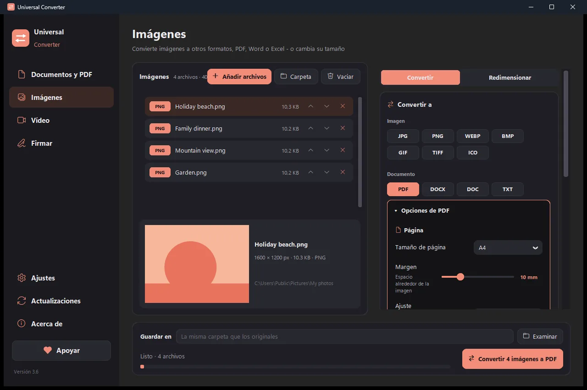
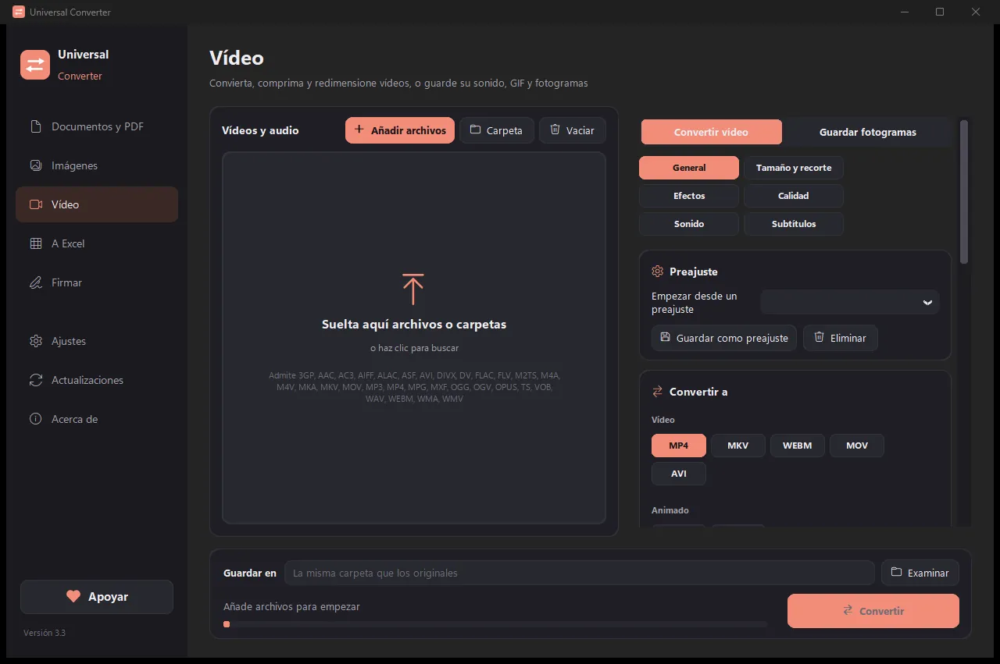
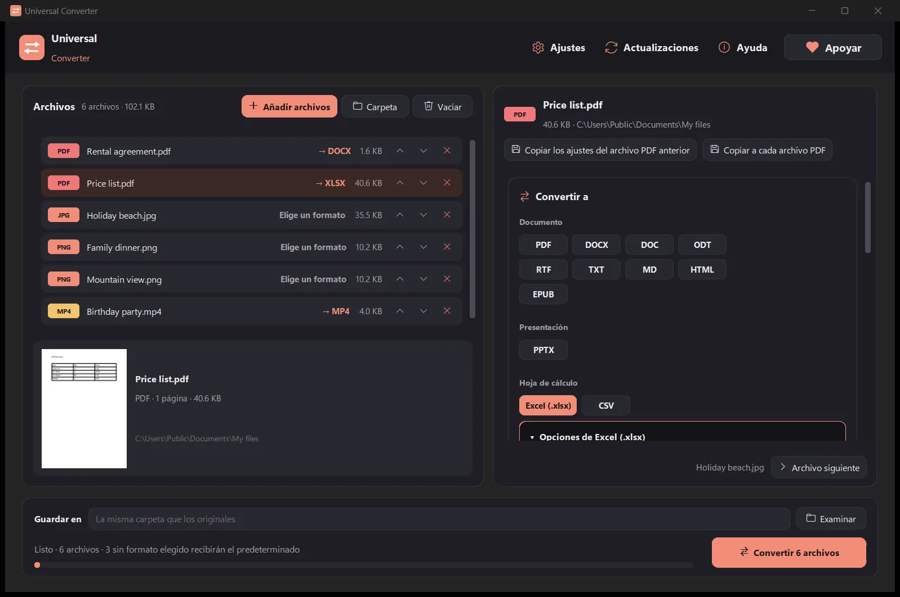
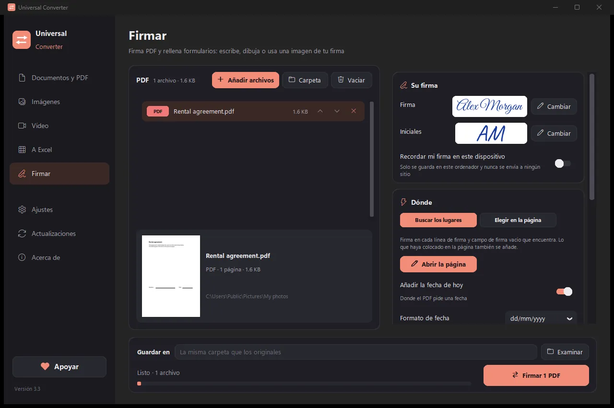

Convierte tus archivos en tu propio dispositivo
Imágenes, documentos, vídeo y audio, PDF y tablas a Excel, todo en una sola aplicación. No se sube nada: tus archivos nunca salen de tu dispositivo.
Cómo instalar y actualizar
- Abre el .dmg descargado y arrastra Universal Converter a Aplicaciones.
- Abre la app. La primera vez macOS la bloquea porque no está firmada por Apple: pulsa OK.
- Abre Ajustes del Sistema > Privacidad y seguridad, desplázate hacia abajo, pulsa «Abrir igualmente» e introduce tu contraseña. Solo se hace una vez.
Actualizaciones: si lo permites al abrirla por primera vez, la app busca versiones nuevas cada vez que se inicia, comprueba su firma digital y las instala cuando tú elijas.
Cómo instalar y actualizar
- Pulsa «Descargar para Android» en tu teléfono.
- Abre el archivo descargado. Si Android lo pide, permite que tu navegador o gestor de archivos instale apps.
- Pulsa Instalar.
Actualizaciones: la app comprueba aproximadamente una vez al día y le avisa cuando hay una versión nueva. Descárguela del mismo modo e instálela sobre la anterior; sus ajustes se conservan.
Cómo instalar y actualizar
- Descargue el archivo .AppImage.
- Hágalo ejecutable: clic derecho, Propiedades > Permisos y permita ejecutarlo como programa (o en una terminal: chmod +x Universal-Converter-*.AppImage).
- Haga doble clic. No se instala nada: la aplicación es este único archivo.
Actualizaciones: si lo permite la primera vez que se abre, busca versiones nuevas cada vez que se inicia, verifica su firma digital y sustituye el archivo AppImage donde está.

Privado
Todo se hace en tu dispositivo. Sin subidas, sin colas de espera, sin límites de tamaño.
Gratis
De uso gratuito, sin anuncios, sin cuenta y sin marcas de agua.
34 idiomas
Español, inglés, griego, italiano, alemán, francés, portugués (Portugal y Brasil), polaco, ruso, árabe, hebreo, chino, japonés, coreano, tamil, afrikáans, yoruba, hausa, hindi, indonesio, turco, vietnamita, sueco, neerlandés, danés, ucraniano, checo, rumano, búlgaro, noruego, malayo, filipino y suajili.
Cinco herramientas en una ventana

Documentos y PDF
Convierte entre PDF, Word, ODT, RTF, TXT, Markdown, HTML, EPUB, PowerPoint y Excel. Pasa páginas a imágenes y une varios archivos en un PDF. Se conservan fuentes, tamaños y colores. Reduce los PDF al tamaño que elijas. Los escaneos y formularios rellenados se convierten en texto y tablas editables, colocados como en la página. Las tablas, incluso sin líneas como en los extractos bancarios, llegan a Word como tablas reales, y también se abren archivos antiguos de Word (.doc) y PowerPoint (.ppt).
Imágenes
Convierte entre JPG, PNG, WEBP, TIFF, BMP, GIF e ICO. Cambia el tamaño en píxeles, porcentaje o tamaño de archivo, une imágenes en un PDF o Word y lee el texto de las imágenes (OCR). También admite PDF: cada página se convierte en una imagen.

Vídeo
Convierte vídeos entre MP4, MKV, WebM, MOV y AVI, y comprímelos, con AV1, H.265, H.264 o VP9. Recorta, encuadra, gira y cambia el tamaño, crea GIF, guarda fotogramas como imágenes o quédate solo con el sonido en MP3, M4A, FLAC, WAV, OGG u Opus. Con varios vídeos, cada uno puede tener sus propios ajustes. En Android: MP4, MKV, WebM, MOV o GIF, o solo el sonido en M4A, OGG o WAV; recortar, encuadrar, girar, cambiar el tamaño y guardar fotogramas.

Excel
Saca tablas de PDF, escaneos y fotos a Excel o CSV: extractos bancarios, facturas, listas de precios. Lee español, inglés, griego y más de 30 idiomas.

Firmar
Firma PDF y rellena formularios. Escribe tu nombre con un estilo manuscrito, dibuja tu firma o usa una foto de ella. La aplicación encuentra sola las líneas de firma, o haces clic o tocas donde van la firma, las iniciales, la fecha, texto o marcas. Firma muchos archivos a la vez; los originales no se tocan.
- Usa la tarjeta gráfica para el vídeo cuando puede: normalmente de 5 a 20 veces más rápido.
- Arrastra carpetas enteras: todos los archivos se convierten de una vez.
- Le avisa cuando un archivo va en otra pestaña y lo lleva allí con un clic.
- Te avisa de las versiones nuevas; en Windows, Mac y Linux puede instalarlas por ti, verificadas digitalmente.
- Aspecto claro u oscuro, como tu dispositivo.
Cómo funciona
- Abre Universal Converter y elige Documentos y PDF · Imágenes · Vídeo · Firmar a la izquierda.
- Arrastra tus archivos o una carpeta entera a la ventana, o pulsa Añadir archivos.
- Pulsa Convertir. Los archivos nuevos se guardan junto a los originales o en la carpeta que elijas.
Qué puede hacer
- Convertir un PDF a Word
- Convertir documentos de Word a PDF
- Unir varios archivos en un PDF
- Comprimir un PDF al tamaño que elijas
- Comprimir un PDF a 100 KB, 200 KB o el tamaño que pida un formulario
- Convertir páginas de PDF a imágenes JPG
- Convertir un documento escaneado en un Word editable
- Convertir imágenes entre JPG, PNG, WEBP y más
- Cambiar el tamaño de imágenes o reducirlas a un tamaño de archivo
- Cambiar el tamaño de una foto o firma a 20 KB, 50 KB o píxeles exactos
- Unir fotos en un solo PDF
- JPG a PDF de menos de 100 KB
- Copiar el texto de una imagen (OCR)
- Comprimir un vídeo sin subirlo
- Convertir vídeos entre MP4, MKV, WebM, MOV y AVI
- Guardar el sonido de un vídeo en MP3
- Crear un GIF a partir de un vídeo
- Pasar tablas de un PDF a Excel
- Convertir un extracto bancario en PDF a Excel
- Extraer tablas de facturas en PDF a Excel
- Firmar un PDF
- Rellenar un formulario PDF
Preguntas
¿De verdad es gratis?
Sí. Universal Converter es de uso gratuito, sin anuncios, sin cuenta y sin límite de tiempo. Si te resulta útil, puedes apoyar su desarrollo con una contribución voluntaria, pero nunca es obligatorio.
¿Se suben mis archivos a algún sitio?
No. Cada conversión se hace en tu propio dispositivo, así que también funciona sin conexión a internet. La aplicación solo se conecta para buscar actualizaciones, para descargar los alfabetos de reconocimiento de texto que elijas y, si lo permites, para enviar informes de errores anónimos.
¿Es seguro descargarlo?
Sí. Antes de publicarse en esta página, las descargas para Windows, Mac, Linux y Android de cada versión se analizan con unos 60–70 antivirus en VirusTotal; el enlace bajo cada botón de descarga abre el informe de ese archivo. La app no muestra anuncios ni recoge datos personales, y la versión de Microsoft Store además la revisa y firma Microsoft.
Windows muestra un aviso de SmartScreen. ¿Es normal?
Sí. El instalador aún no tiene firma de código, así que Windows no lo reconoce. Elige «Más información» y luego «Ejecutar de todas formas». Las actualizaciones posteriores las verifica digitalmente la propia aplicación. O instálalo desde Microsoft Store, que no muestra ningún aviso.
¿Cómo lo abro en un Mac?
Abre el archivo descargado y arrastra Universal Converter a Aplicaciones. La aplicación no está firmada por Apple, así que la primera vez que la abres macOS la bloquea: pulsa OK, abre Ajustes del Sistema > Privacidad y seguridad, pulsa «Abrir igualmente» e introduce tu contraseña. Solo hace falta una vez.
¿Cómo lo instalo en Android?
Descarga el APK en el móvil, ábrelo y permite la instalación cuando te lo pida (Android 10 o posterior). Los 34 idiomas vienen incluidos; elige uno en los Ajustes de la aplicación. La aplicación te avisa cuando hay una versión nueva.
¿En qué idiomas está?
La aplicación está en español, inglés, griego, italiano, alemán, francés, portugués (Portugal y Brasil), polaco, ruso, árabe, hebreo, chino, japonés, coreano, tamil, afrikáans, yoruba, hausa, hindi, indonesio, turco, vietnamita, sueco, neerlandés, danés, ucraniano, checo, rumano, búlgaro, noruego, malayo, filipino y suajili. Eliges el idioma en el instalador o más tarde en Ajustes.